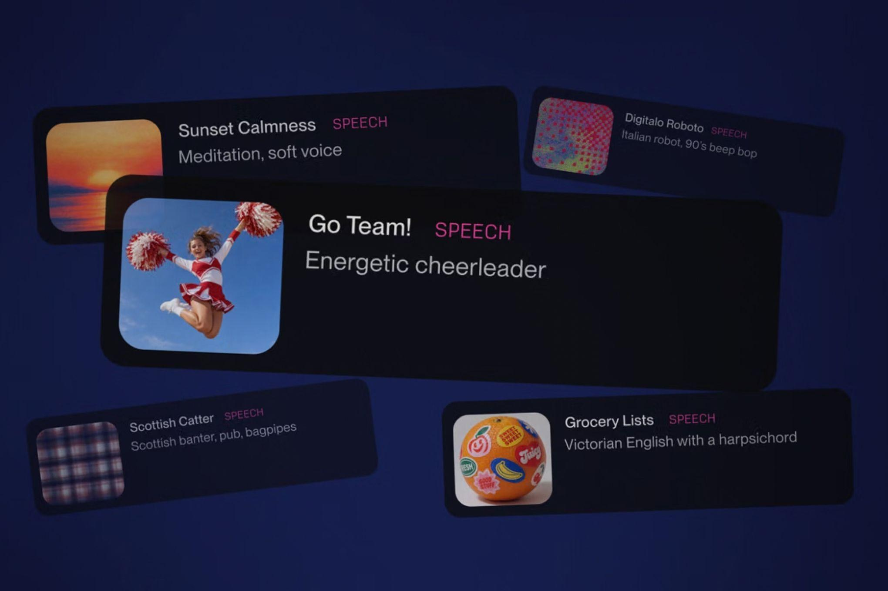

Suno, известный генератором музыки по текстовому описанию, представил Speech — публичную бету синтеза речи. Функция доступна на веб- и мобильной платформах сервиса и, по заявлению компании, является «первой аудиомоделью, которая генерирует голос и музыку вместе как один цельный трек». Генерацию фонового сопровождения можно отключить переключателем и получить чистую речь.
Речь создаётся либо по свободному описанию в режиме Simple (например, «капитан пиратов, вдохновляющий команду»), либо по готовому сценарию в режиме Advanced. В расширенных настройках доступны «пол» голоса, стиль речи и степень разнообразия вариантов генерации; максимальная длительность — около восьми минут.
Синтез речи сам по себе не нововведение: Google DeepMind экспериментирует с ним с WaveNet уже около десятилетия, у Adobe есть TTS-инструмент в Firefly, а ElevenLabs с 2023 года стал одной из самых узнаваемых платформ в нише. Собственный ход Suno — именно связка голоса с музыкой: спокойный саундтрек под чтение стихов или энергичное сопровождение для драматичной закадровой речи.
Для самого сервиса это попытка диверсификации: музыкальный генератор Suno за последние годы пережил несколько копирайтных исков от звукозаписывающих компаний, включая проигранный процесс в Германии. В компании признают, что бета несовершенна: по словам директора по продукту Джека Броди, «бета действительно означает бета» — британские акценты иногда «уезжают в Австралию и обратно».
У нас: синтез речи развивают Сбер (SaluteSpeech) и Яндекс (SpeechKit).